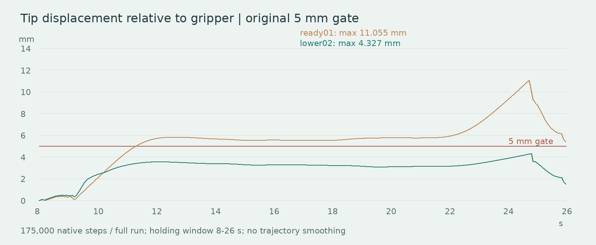

← 返回 AgentEGO2SIM / V10 / lower02 / 2026-10-25
管尖偏移回到原门槛内。
最大管尖相对位移由 11.055 mm 降为 4.327 mm，原 5 mm 门槛不变。双侧持握、滴加、放回、自由释放及原有全部原生门槛同时通过。烧杯接收 0.161 mL，未检出洒出。
把抓点下移 12 mm，抑制长管转动放大的管尖偏移
旧方案胶头中心移动仅 1.437 mm，但胶头相对夹爪转动达到 3.394°，经长管放大后管尖相对位移达到 11.055 mm。改变姿态角、去掉或削弱转动反馈、保持管轴恒倾角都未通过，失败记录保留。
本次只把对象局部抓取目标沿管轴下移 12 mm，保留原 CAD、接触材料、胶头弹簧、夹爪压缩命令、液体模型、时间步长和求解上限。完整 35 秒从原物体初态重跑；机器人初始预抓取位随抓点重新计算，属于明确的初态姿态适配。
10 mm 下移得到 5.156 mm，14 mm 下移反而回升到 9.207 mm，均不发布。采用的 12 mm 方案得到 4.327 mm，胶头中心偏移 0.749 mm、相对转动 1.256°，左右实际接触累计滑移 1.569/1.640 mm。未提高摩擦、附加焊接或把原 5 mm 门槛改名放宽。
用 FK 和对象局部抓点独立重建计划管尖目标：各事件关键帧与上一版差异低于数值精度，插值过程最大差异 0.070 mm。取液、滴加与回瓶目标没有被换成更容易的任务。实际物理轨迹仍需单独验收，不能把目标相同解释为物理状态相同。
35 秒、175,000 原生步的抓持、滴加、自然放回和全部原门槛共同通过。该结果针对本场景的假定物性；不等于不同初态、真实胶头或真机已经标定验证。

动作平稳性
实际 30 Hz 轨迹峰值关节速度 0.932 rad/s，加速度 1.975 rad/s²；基线分别为 0.928、2.254。无肘部构型跳变。速度不比基线增加超过 5%、加速度不超过 10% 的保留检查通过；这是同采样率诊断，不是真机极限认证。
完整连续求解验收
| 项目 | 原门槛 | 实测结果 |
|---|
| 原始管尖相对位移 | ≤5 mm | 4.327 mm |
| 双侧持握 | 8–26 s 每个原生步 | 90,001/90,001 |
| 左右接触累计滑移 | 各 ≤5 mm | 1.569 / 1.640 mm |
| 胶头中心偏移 / 转动 | ≤5 mm / ≤5° | 0.749 mm / 1.256° |
| 初始穿插 | ≤0.10 mm | 0.000 mm |
| 动态禁止接触 / 自碰撞 | 全原生步 ≤0.10 N | 通过 |
| 烧杯 / 回瓶 XY 误差 | 各 ≤5 mm | 0.234 / 0.783 mm |
| 自然斜靠角 | 8–16° | 12.332–12.340° |
| 末态线速度 / 角速度 | ≤2 mm/s / ≤0.02 rad/s | 0.0355 mm/s / 0.00794 rad/s |
| 关节、控制与驱动力 | 原配置限制 | 通过 |
| Newton 峰值 / 警告 | <100 / 0 | 8 / 0 |
| 进入烧杯 | >0.1 mL | 0.161493 mL |
| 洒出 / 边界异常 | 0 | 0.000000 mL / 0 |
| 体积守恒误差 | <0.000001 mL | 4.61e-13 mL |
每步 0.2 ms，共 175,000 步，持握区间覆盖 90,001 步。最大接触软穿透 0.222 mm。滴管没有焊接到夹爪，没有中途设置物体状态，也没有拼接成功片段。新发布检查要求原始管尖门槛与接触、液体等门槛共同通过。
参考 SimFoundry 后补了什么
对官方代码 commit 9e34ebef 的反投影、世界坐标、物体配准、物性导入、场景整理和对象局部关键点规划做了逐段审查。本轮增加对象局部抓点与管尖事件目标的一致性核对，新增 528 个变换的 SE(3) 与往返核对、XYZW/WXYZ 序列转换、实际加载的质量/惯量/摩擦/限制一致性，以及三类错误坐标反例；同时按动作阶段分解管尖偏移，绑定输入状态哈希。
SimFoundry 的场景整理会清零速度，演示生成可采用 assisted grasp，携带物体规划有缩放设置；这些不能用于本任务的自然释放与真实抓持验收。当前只借鉴其分阶段合同与对象局部动作组织，不声称已经运行或移植整套 SimFoundry。
整个链路下一步仍要优化
| 环节 | 实际边界与下一步 |
|---|
| 相机、深度、坐标 | 单目 CAD 尺度先验；独立相机跟踪仅 4/9 样本有效。视频与机器人另有 132.96 mm 布局适配，须继续标定与独立保留帧验证。 |
| 透明滴管与人手接触 | 263 帧中 82 帧管尖可见；轴向 roll 不可观测。192 组人手接触候选中 7 组几何未通过，严格指尖检查仅 160 组通过；几何候选不代表测得接触力。 |
| 规划与实际感知 | 进一步加入全尺寸携带工具的规划扫掠体、对象局部事件和不确定性。当前反馈读取模拟真实位姿，尚非视频感知端到端部署。 |
| 胶头、液体与真机 | 优先实测压力–压缩曲线、质量、摩擦和容量。双片弹簧胶头、等温气腔、黏性管流、弹道液滴与静液面仍是简化模型；未覆盖 CFD、润湿、飞溅、混色或化学反应。 |
通过的是这条仿真记录的明确检查。原上游 15 个视频仍保留各自观测与估计边界，未因本轮动力学通过而自动升级成三维真值、已标定场景或真机成功。
视频与证据
保留 RealMan RM65-B、Xense、原相机与资产、原液体颜色。5 段视频均来自同一条 35 秒原生求解，Blender Cycles 1280×960、24 samples、30 Hz、1,051 帧，物体与机器人没有渲染平滑。原固定相机保留原视域，总览和近景用于检查。完成全片解码与回放绑定。
全部原生门槛 · 管尖分阶段诊断 · 平稳性 · 液体 · 独立记录核对 · 全链路合同检查 · 抓点与管尖目标核对 · 失败候选记录 · SimFoundry 代码审查 · 视频哈希
V9 历史结果与原视频（管尖未过） · 下载完整机器人视频 · 下载液体视频